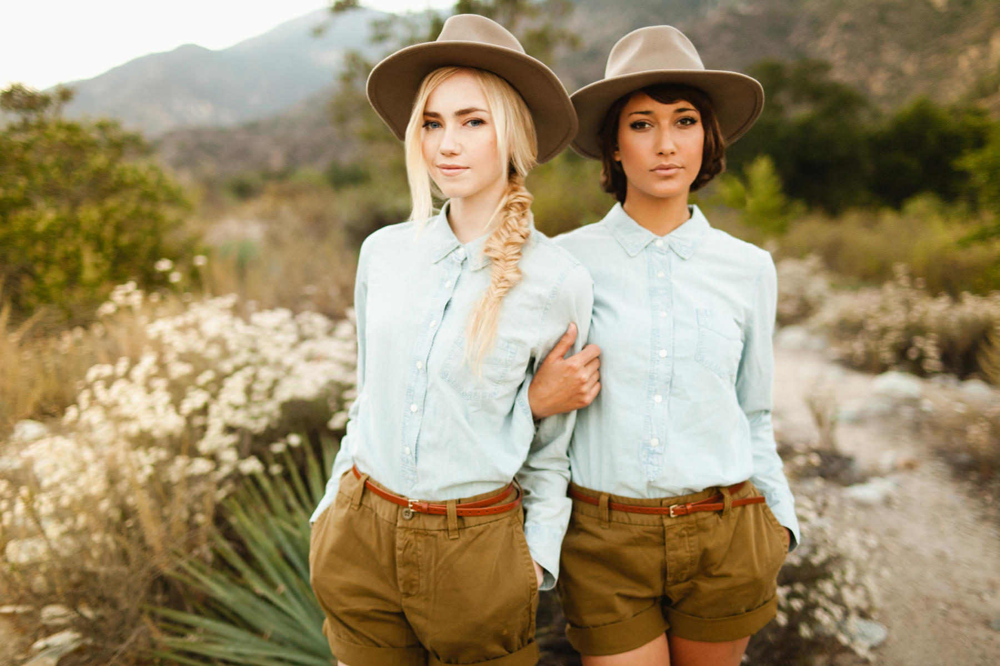
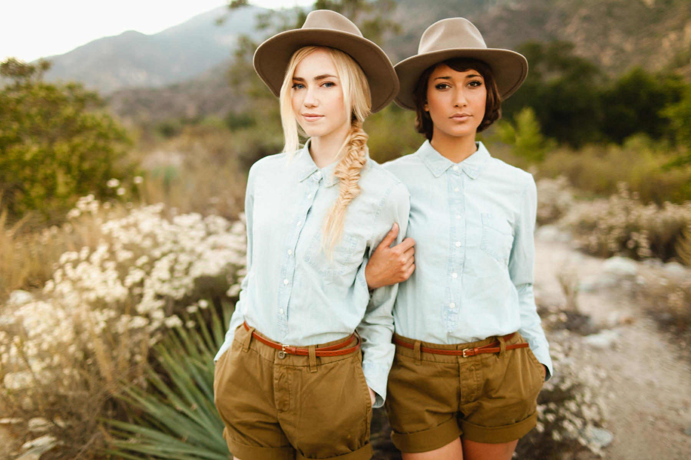

Ben Sasso

Ben Sasso is a contemporary portrait photographer and educator who strongly believes in fostering community over competition in the photo industry. In addition to being pulished in 30+ magazine outlets, Ben Sasso has also been a speaker at numerous photo events including WPPI 2015 + 2016 and the Rising Tide Summit.
Ben Sasso’s photographic style can be described as intimate, warm, and luminous. As a traveling photographer, Ben has a deep appreciation for nature that is reflected throughout his portraiture work. He aims to capture genuine love and emotion, and uses gorgeous natural landscapes to supplement the natural chemistry of his subjects.
Ben Sasso offers lightroom presets as well as online courses on lighting, editing, branding, posing, and social media. He regularly blogs his sessions with photography tips and encourages questions from his readers.
 


“Being mentored by Ben was an absolute eye-opener. It was amazing to watch him work because there is a reason for everything he does – he puts so much thought and effort into creating images that connect with the viewer. This was absolutely worth every penny I spent!” - Lauren